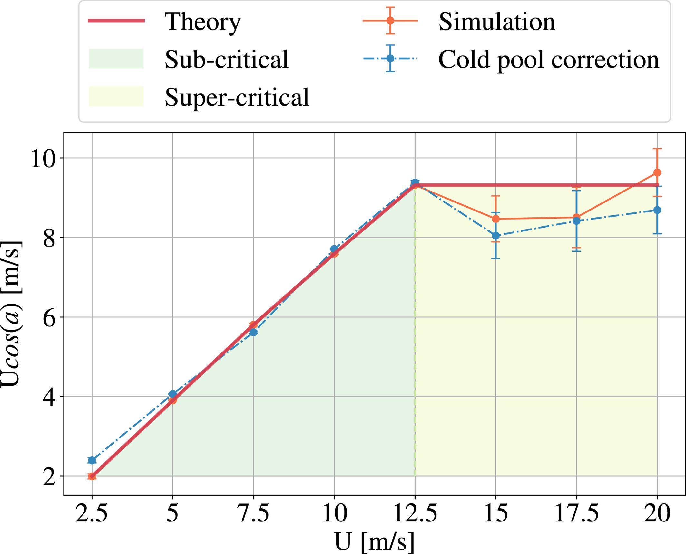
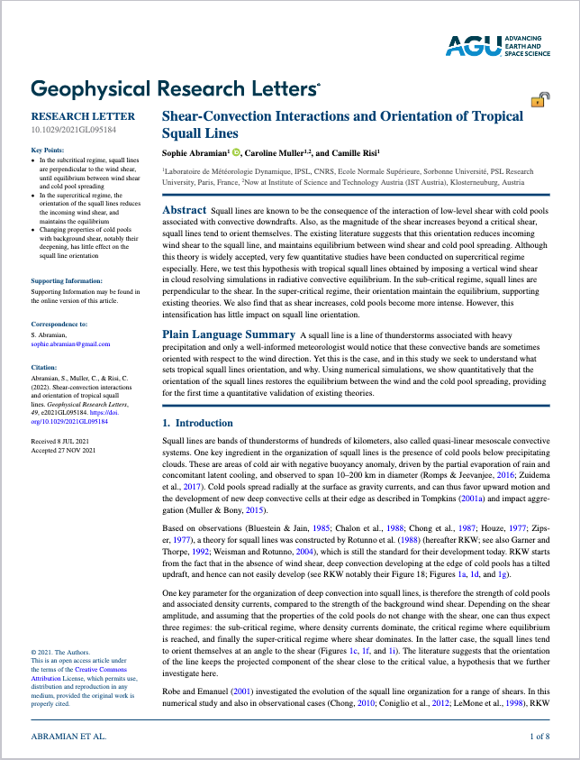

Abstract
Squall lines are known to be the consequence of the interaction of low-level shear with cold pools associated with convective downdrafts. Also, as the magnitude of the shear increases beyond a critical shear, squall lines tend to orient themselves. The existing literature suggests that this orientation reduces incoming wind shear to the squall line, and maintains equilibrium between wind shear and cold pool spreading. Although this theory is widely accepted, very few quantitative studies have been conducted on supercritical regime especially. Here, we test this hypothesis with tropical squall lines obtained by imposing a vertical wind shear in cloud resolving simulations in radiative convective equilibrium. In the sub-critical regime, squall lines are perpendicular to the shear. In the super-critical regime, their orientation maintain the equilibrium, supporting existing theories. We also find that as shear increases, cold pools become more intense. However, this intensification has little impact on squall line orientation.

